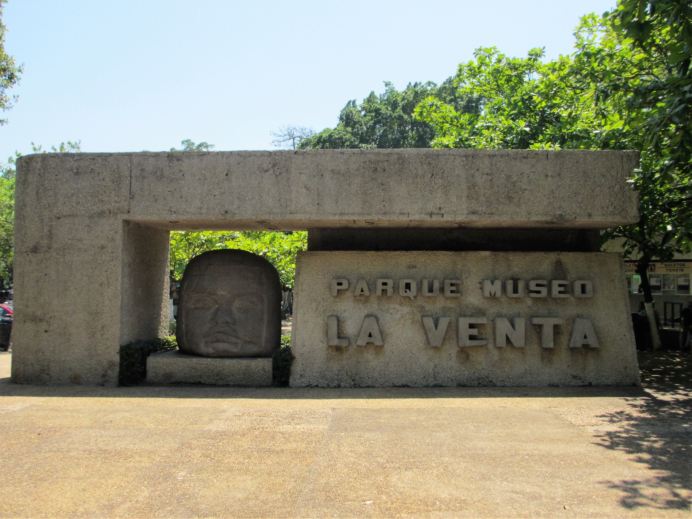

AUDIOGUIAS INTERACTIVAS
Escucha descripciones detalladas de las piezas arqueológicas y monumentos emblemáticos mientras realizas tu recorrido.
AUDIOGUIAS QR PARQUE MUSEO LA VENTA
Este sitio fue creado para proporcionar a los turistas y de igual manera a los habitantes del estado de Tabasco, un medio digital intuitivo y accesible que sirva como guía interactiva para navegar e identificarse con las diferentes expresiones culturales, etc.
El proyecto está basado en crear una plataforma en la web interactiva orientada a los turistas y residentes del estado de Tabasco-Villahermosa, con el propósito de la difusión , revalorizar y facilitar el acceso al patrimonio arqueológico e histórico de la región, destacando de manera protagónica la riqueza monumental que se encuentra en las instalaciones del Parque-Museo La Venta.
La página web no solo funciona como una forma de mantener la información también tiene como propósito ser una asistente dinámico y fácil de usar ayudando de esta forma no solo a las personas si no también a la comunidad del estado al aumentar el turismo.
El desarrollo de esta plataforma web interactiva aporta un alto valor a la cultura, igual de manera educativa y turística, destacándose por las siguientes características clave:
-Accesibilidad e inclusión multimedial
-Experiencia de visita interactiva y en tiempo real
-Impulso al turismo local y regional
-Fomento de la identidad y educación cultural
-Solución digital eficiente y de bajo costo
La riqueza histórica del estado de Tabasco y del Parque-Museo La Venta posee un valor incalculable a nivel mundial.
Sin embargo, existe una brecha en cómo se transmite esta información a las nuevas generaciones y visitantes a través
de medios tradicionales.
Para solucionar esto, el equipo T'an Bajlum desarrolló una plataforma web interactiva que moderniza la divulgación prehispánica.
A través de recursos fotográficos, mapas de orientación y un módulo inclusivo de audioguías para personas con discapacidad visual,
buscamos romper barreras de accesibilidad, fortalecer el orgullo de la identidad tabasqueña e impulsar el turismo y la educación
mediante el uso de tecnologías digitales.
El principal reto del proyecto radicó en deficiencias de comunicación y organización interna dentro del equipo. La falta de una coordinación fluida dificultó la asignación eficiente de tareas, la alineación de objetivos y el cumplimiento a tiempo de los compromisos, lo que afectó el ritmo de trabajo y el alcance final esperado.

Escucha descripciones detalladas de las piezas arqueológicas y monumentos emblemáticos mientras realizas tu recorrido.
Ubica de forma rápida las icónicas Cabezas Colosales y altares dentro de las instalaciones del parque-museo.
Diseñado para facilitar el acceso a la cultura a personas con discapacidad visual y visitantes de todas las edades.